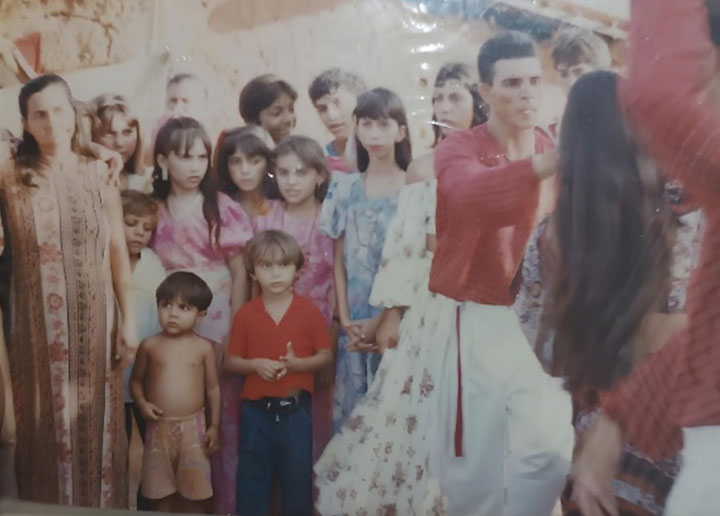
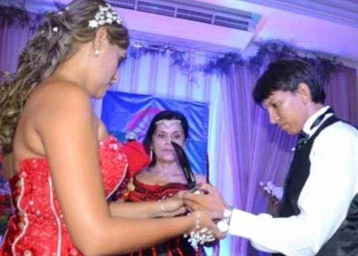

História dos povos ciganos e suas implicações
Aspectos históricos e suas implicações

Desde os primórdios da colonização brasileira, os povos ciganos estiveram presentes. Nos últimos vinte anos, houve um aumento significativo do interesse pelas ciências sociais brasileiras em relação a esses povos. Apesar de serem reconhecidos como povos tradicionais pelo Estado, conforme o Decreto 6.040 de 2007, e de haver crescente interesse acadêmico sobre o tema, o progresso nessa área tem sido gradual e há poucas iniciativas para reunir e promover o diálogo entre os trabalhos mais recentes sobre essas populações.
Com uma estrutura social centrada na família e um estilo de vida que enfatiza o coletivo, os povos ciganos no Brasil sempre compartilharam o mesmo espaço com não ciganos, em uma dinâmica que mescla autonomia e dependência em relação a esse meio.
Nos primeiros anos da colonização portuguesa, há registros de pessoas e famílias ciganas ocupando o território hoje conhecido como Brasil. Entre os séculos 16 e 18, o Reino de Portugal emitiu uma série de normas que essencialmente criminalizavam a presença cigana, proibindo práticas culturais como o uso da língua própria, vestimentas tradicionais e formas de organização social. As penalidades variavam desde prisões severas até agressões físicas, deportações e até mesmo a pena de morte.
Observe os dois importantes marcos a seguir:
pan_tool_alt Clique Toque nos anos para visualizar as informações.
Pesquisas etnográficas demonstraram que, apesar das mudanças recentes nas condições socioeconômicas e das diversas pressões para assimilar, os ciganos têm conseguido manter um modo de vida distinto. Este modo de vida se manifesta através da língua, dos casamentos entre famílias ciganas, de uma moral, estética e visão de mundo próprias e específicas. (Campos e Fotta, 2023). Vamos conhecer os costumes e tradições a seguir.
Costumes e tradições

O modo de organização sociocultural das comunidades ciganas varia entre os diferentes troncos étnicos ou comunidades. Contudo, há alguns pontos em comum, como a organização social estruturada em torno da família e a valorização das configurações que ela proporciona, incluindo seus rituais e locais. A família é central para as comunidades ciganas, agregando costumes e tradições essenciais para a ciganidade.
Três principais rituais se destacam:
pan_tool_alt Clique Toque nas abas para visualizar as informações.
Há um cuidado extremo com as crianças, considerando-as preciosas e garantindo seu bem-estar desde o nascimento..
Em algumas comunidades ciganas, a preservação da vida sexual pode estar relacionada a valores culturais que atribuem à mulher expectativas de honra e respeito no contexto familiar e comunitário. Além de reforçar a reputação do homem por meio de suas ações que estão em acordo com a tradição cigana.
Envolve um respeito profundo pelos idosos e pelos mortos, demonstrando a importância das gerações passadas e da memória ancestral na cultura cigana. É comum os familiares queimarem objetos pessoais dos mortos.
Esses elementos são comuns a muitas comunidades ciganas, embora possa haver variações específicas dependendo do tronco étnico, como os Rom, Sinti, Kale e Calon. A vida em comunidade é marcada por uma forte coesão social e por rituais que reforçam a identidade e a continuidade cultural cigana (SILVA JR., 2009, 2018; SOUZA, 2013).
Segundo Silva (2016), o povo cigano é portador de valores e tradições singulares, que os caracterizam como uma etnia distinta. Essa identidade étnica é definida por várias características culturais, linguísticas e genéticas. Vejamos a seguir as características culturais:
pan_tool_alt Clique Toque nos ítens abaixo para visualizar as definições
Muitos ciganos mantêm um estilo de vida itinerante, embora alguns grupos tenham se estabelecido permanentemente.
Possuem práticas religiosas e espirituais profundas, frequentemente mesclando crenças tradicionais com práticas locais.
Há um grande senso de comunidade e ajuda mútua entre os ciganos.
Os acordos são respeitados rigorosamente, e a palavra dada tem grande valor.
O homem é geralmente o principal provedor, muitas vezes trabalhando no comércio.
A mulher é responsável pelas tarefas domésticas e pela manutenção da casa.
Atualmente, a depender do grupo no qual estão inseridas, as mulheres ciganas também estão no mercado de trabalho e, por sua vez, contribuem financeiramente no casamento.
Diversos grupos ciganos acreditam que são mais autênticos por continuarem nômades ou por manterem viva a língua, chegando a se autodenominar "guardiões da cultura cigana" ou "ciganos de primeira classe", considerando os demais ciganos como não legítimos. Moonen (2013) explica que essa ideia foi adotada por ciganólogos que estavam próximos a esses grupos e, eventualmente, se espalhou. O autor ainda afirma que esse debate é inútil, pois é inviável estabelecer critérios que sejam universalmente aceitos.
Modos de vida do povo cigano
As famílias ciganas em situação itinerante – sem residência fixa – utilizam a tenda como moradia. Essas tendas, feitas de lonas galvanizadas ou plástico impermeável, são montadas com técnicas específicas para manuseio das estacas de sustentação no solo, que variam entre os povos Rom e Calon. A qualidade das lonas, crucial para proteção contra a radiação solar, frio, vento, chuvas fortes e outras questões climáticas, depende da situação financeira do grupo. Mas, na maioria das vezes, a barraca não é respeitada pelas autoridades como uma moradia, garantindo inclusive questões legais, como a inviolabilidade do lar nas questões jurídicas e de justiça.
A maioria dessas famílias acampa em áreas públicas, com autorização prévia dos gestores municipais. No entanto, os terrenos designados geralmente carecem de saneamento básico ou qualquer infraestrutura essencial, como fornecimento de água e energia, ou recolha de lixo. Essas questões afetam de forma profunda a saúde das populações ciganas, inclusive, sofrendo racismo ambiental.
No caso da Covid-19, as medidas de higiene exigiam água e limpezas constantes, o que era uma recomendação muitas vezes difícil de ser cumprida pelas populações ciganas itinerantes.
As casas de pau a pique, também conhecidas como taipa de mão, taipa de sopapo ou taipa de sebe, são uma técnica construtiva antiga que utiliza o entrelaçamento de madeiras verticais fixadas no solo, combinadas com vigas horizontais, geralmente de bambu, amarradas com cipós. Este método cria um grande painel perfurado, cujos vãos são preenchidos com barro, formando paredes robustas. Um exemplo dessa técnica pode ser observado na comunidade cigana de etnia Calon, residente em um bairro no município de Sousa, Paraíba. Nesta comunidade, cerca de 1.720 pessoas vivem em casas construídas dessa forma, enfrentando condições precárias sem saneamento básico e energia elétrica.
Quer saber um pouco mais sobre o itinerante dos ciganos? Leia a crônica-reportagem produzida em 2021 durante a disciplina de Jornalismo e Cultura do curso de Jornalismo da FABICO, com orientação da professora Cida Golin.